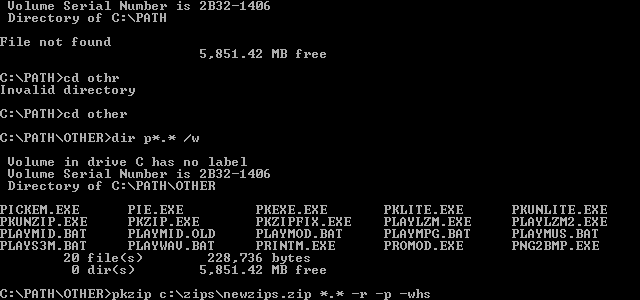
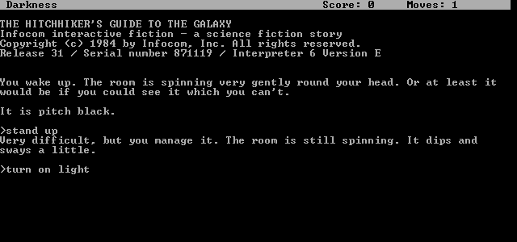
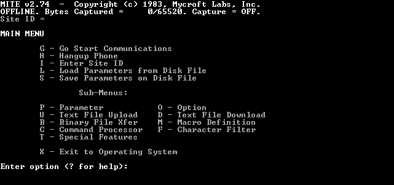
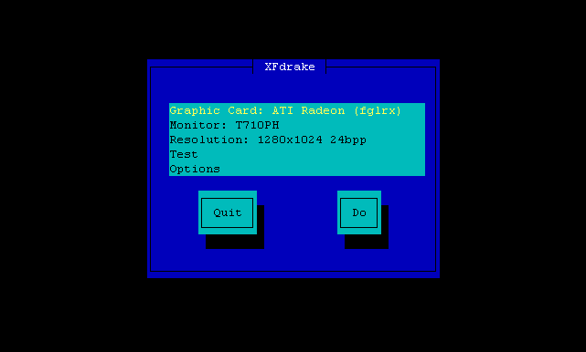
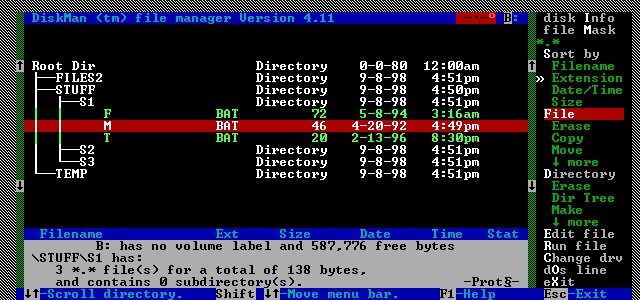
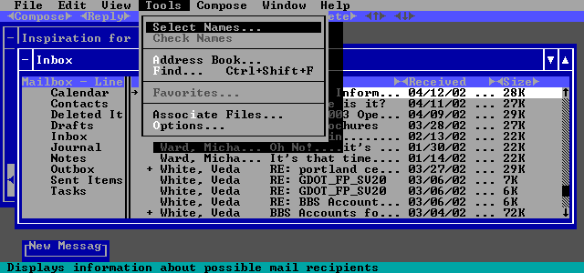
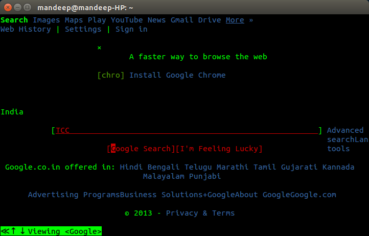

Date: 2025-01-29
Reminder of desktop metaphors:
We’ll review our homework from the past week.
Note for Windows users: I’m sorry to say this, but the standard text interface is Linux! Macintosh computers have access to this under the hood because they are built on top of BSD, which uses the same commands as Linux. PC users, your Windows Powershell is fundamentally different, and so you should use Windows Subsystem for Linux.
Last week we looked at a history of interfaces and operating systems.
Review: What is a User Interface?
Yet with its creaky, decades-old constraints and inexplicable quirks, the command line is still the most versatile corner of the computer. It lets you pull back the curtain, see what’s really going on, and creatively interact with the machine at a level of sophistication and depth that GUIs cannot afford. It’s available on almost any laptop, for anyone who wants to learn it. It can be used interactively, or it can be automated. And, it doesn’t change as fast as other parts of the system. There is creative value in its stability. –source: Command Line Interface Guidelines
In the early years of computing, we had circuits, switches, lights, and dials. Later came punch cards for calculations and storing data and programs. Still later came terminals, which were monitors connected to a computer. We input commands to the computer through a Teletype typewriter. Output would be printed out or displayed on the terminal monitor.
Computers are complex. IC chips that computers were built from, especially in the earlier years, were expensive. Because of this, computers had a minimal amount of memory. Text was much easier to store and work with, so the priority was placed on text. This became the primary way to interact with a computer.
Video: keyboards and command line interfaces on youtube - PBS Video, 11min

example command line interface
The command line interface is a text-only interface. Where the user types in commands is known as the prompt. A user types in commands; then the output is displayed immediately. And a user may then type in more commands, with more output, in a continuous cycle.
Some advantages: - A “powerful” environment. Everything can be done on one screen, in one location. Commands can be combined together. - Commands are “conversational”. They can evolve over time, iteratively. - They can be automated.
Disadvantages: - “Discoverability” problem. Which commands are available? How do you use them? What options exist? - Expertise needed to get started and to advance. Not beginner-friendly.
Macintosh computers were the first mass-market computers to popularize taking a graphics-first approach to computer interfaces. The Mac Human User Interface guidelines were printed in 1987. They emphasized “see and point” instead of remember and type.

Hitchhiker’s Guide to the Galaxy Game
You can see in this screen a text-based game. These were similar to “Choose your own adventure” style books you may have read as a kid, or other branching narratives, but they had much more functionality. Not only did you advance in a story, but you had inventory, could solve puzzles, join battles and more.
This program uses a parser. The parser is the interface that runs through commands you type in and then executes code depending on your commands.
These types of games attempted to use a more natural language, but they could still have problems with their commands being unclear.
Over time, programmers attempted to use space and to make these programs more visual.

text user interface example

A simpler text user interface example. You can see how this
approaches a traditional graphic user interface in design.
These kinds of programs that run in the command line are called Text User Interfaces.

a file manager program, an alternative way to view the desktop
Some of these programs started using color. They can be quite complex.

This is an example of Microsoft Exchange, the email system our
school uses, navigated in DOS with a Text User Interface.
You’ll notice this program almost appears to be a GUI. It even has menus.

Here is a web browser running in the command line, searching on
Google.
Keyboards and Command Line Interfaces from PBS
Keyboards and Command Line Interfaces, on PBS, 11 minutes
Basic commands today
To move around:
cd [foldername]To move around (“change directory”) in folders on our computer.
lsTo list files in a folder.
pwdTo remind you what folder you are in. (aka “print working directory”)
cat [filename]This prints out the text of a file onto the screen.
man [program-name]This starts up the computer manual for a command line program. You can scroll up and down and press Q when you are finished reading to exit.
echo "text"Prints out text.
When you get stuck, Control-C usually is the CANCEL command. Though a few use Control-D.
BASH
#!/bin/bash
# Ask the user for their name
echo "Hello, who am I talking to?"
read varname
echo "It's nice to meet you $varname"Your goal: design command line software for determining the total number of pizzas to order for a group of people.
Your software should be useable by a variety of people, from beginners to command line interfaces to advanced users.
Your program should have help, be intuitive, and ideally, powerful.
At minimum, your program should ask for the total number of people, then print out the ideal number of pizzas to order.
Other optional things to consider adding: Do you want to tailor your program for kids vs adults, how hungry you are, various sizes of pizza, or what toppings people like?
Things to consider: - adding ascii art - adding a menu - adding help - adding “power features”
Please note that there is not one definitive best way to calculate. Figure out a formula that seems right to you. You will see a variety of potential formulas online, including the “3/8” rule.
Due in 2 weeks:
Work with a partner to design a Text User Interface for a program of your choice. You could make music playing software, a countdown timer, a program that reads aloud to the user, a to-do list maker, a meditation app, a sleep machine, or something else.
Create a menu by printing out options for the user.
Use the select command to run a function based on the user
selection.
In class we learned you can combine command line software together. In this assignment you should consider what building blocks from BASH you will use to make your software. We can consider gluing these program bits together similar to sticking together lego blocks.
Recommended program parts to use in your software:
# this is a comment. Use them!
echo "some text" # prints text out
echo -e "some text
on two lines"
read -$ "Enter your name " yourname
#Prompts with "Enter your name" and saves in $yourname
#Don't forget variables are used starting with $
say "something" # speaks text out loud
afplay file.mp3 # plays an audio file
sleep 10 # sleeps (waits) 10 seconds
This should be all you need to make an interesting basic CLI program. You are welcome to use other BASH commands and programs as well.
Your final program will be due in 2 weeks. In addition to a function piece of software, consider how a prominent title, emojis and/or ascii art could help or hinder your software. How can color help make your interface more useable and/or fun? How can you make the program more discoverable with help?
You have two weeks to finish your CLI program. For homework, continue to work with your partner on your CLI program, getting the main concept developed along with creating your working program loop. You will likely have a loop that checks for user input, then displays a result based on what the user selects from a menu. Next week we will be doing user testing and build in a ‘help’ command to our programs.
Due Next week:
Read the excerpt from Design/Interface in The Interface Experience, up to page 58 in the book (which is 23 pages of the pdf).
Write: In The Interface Experience what concepts from earlier media theorists, technicians and designers stick out to you that can inform our user interface design work?
Due Next Week: